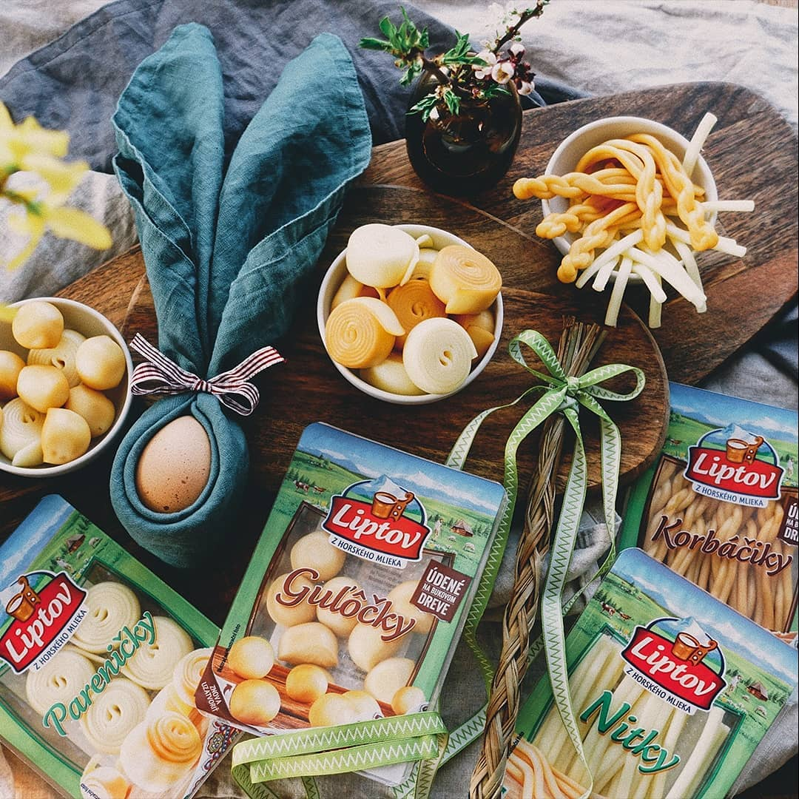

Syrové guľôčky podľa @nas_liptov — Normy Jedál
🐣 Ak nechcete, aby pred vami slečny a dámy na Veľkú noc utekali, vymeňte korbáč za korbáčiky z Liptova. 😉 Prajeme vám veľkonočné sviatky plné pohody a chutného jedla.
#nasliptov #syr #parenicky #korbaciky #syrovegulocky #syrovenite #liptov #praveslovenske #thisisslovakia